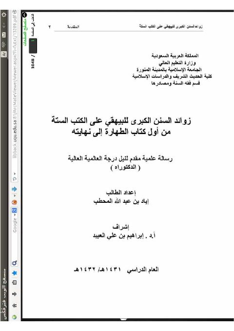
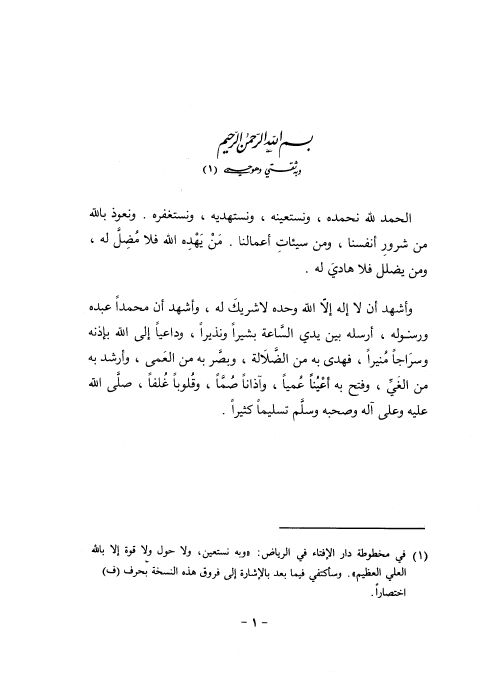

دار المأمون للتراث
Publisher
Resources

رياض الصالحين- دار المأمون رياض الصالحين- دار المأمون يحيى بن شرف النووي رياض الصالحين- ط. المأمون للتراث
رياض الصالحين- ط. المأمون للتراث
يحيى بن شرف النووي
رياض الصالحين- ط. المأمون للتراث
رياض الصالحين- ط. المأمون للتراث
يحيى بن شرف النووي

الحكم الجديرة بالإذاعة من قول النبي بعثت بالسيف بين يدي الساعة الحكم الجديرة بالإذاعة من قول النبي بعثت بالسيف بين يدي الساعة عبد الرحمن بن أحمد بن رجب الحنبلي